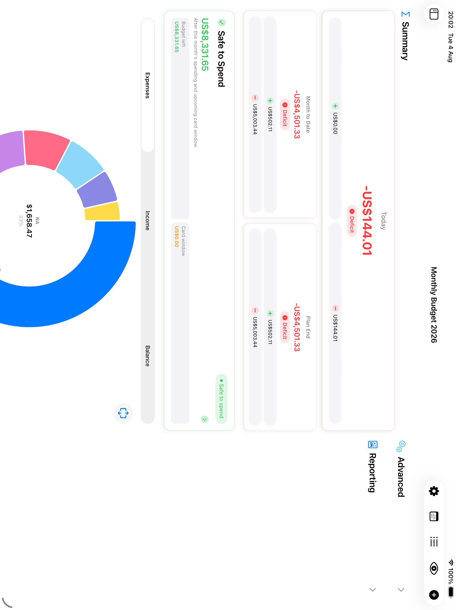
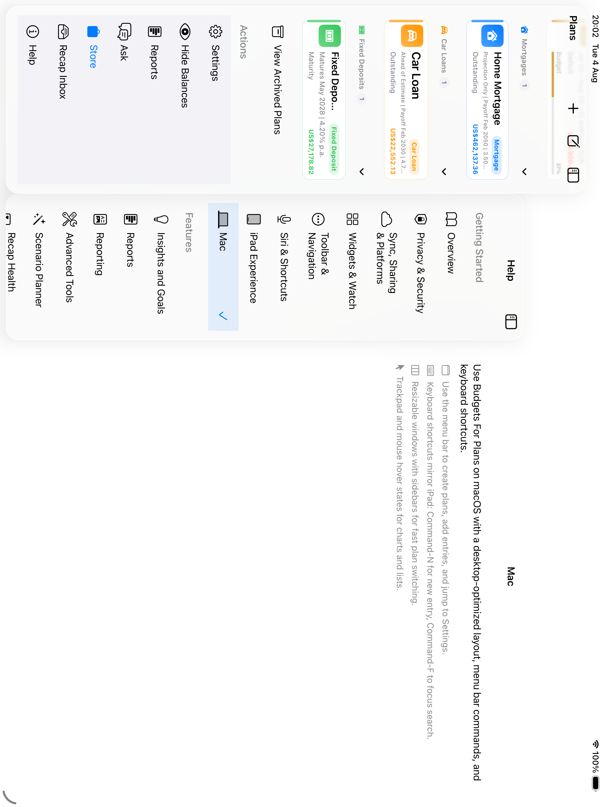
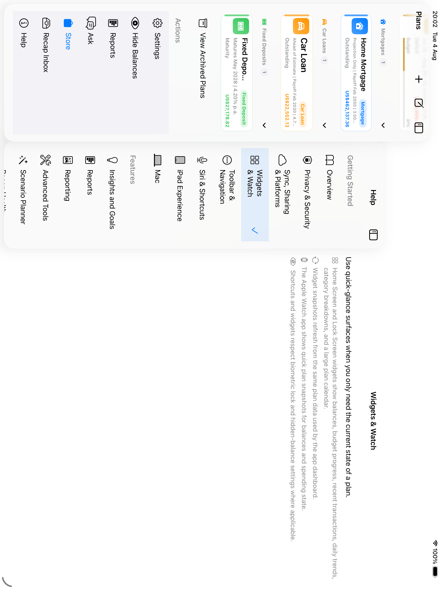
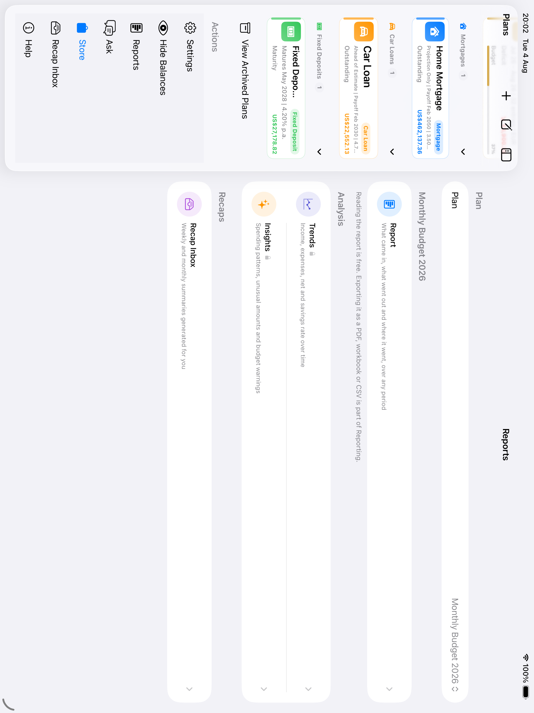

📱 Professional-Grade iPad Experience
For iPad-first workflows, Budgets For Plans uses larger-screen layouts and interactions that keep planning fast and focused. Swipe horizontally through the highlights below.
Split View Architecture
Keep plans available in a polished sidebar while viewing detailed breakdowns, charts, and entries side-by-side. In portrait, the sidebar stays out of the way by default but can still be opened to change plans, then collapses after selection.
- Card-Style Plan Sidebar - Compact plan rows mirror the iPhone plan list with currency, balance, entry count, and budget progress
- Portrait Sidebar Control - Sidebar hides by default, remains available for plan switching, and collapses after selection
- Balanced Detail Columns - When the sidebar is hidden in landscape, the dashboard uses two equal-width columns
- Smart Orientation Handling - Smooth transitions when rotating your iPad

Side-by-Side Charts
In landscape mode, the detail view balances dashboard sections across columns. With the sidebar hidden, both columns use equal width so charts, metrics, and advanced sections feel evenly weighted.
- Balanced Columns - Equal-width detail columns when the sidebar is hidden
- Dual Chart View - Compare expenses and income at a glance
- Full-Width Balance Trend - Track your financial trajectory over time
- Enhanced Chart Height - Larger 600pt charts show more data points
- Interactive Hover States - Trackpad support highlights chart details

Entry List Split View
Edit entries without losing your place in the list. The split view shows all entries on the left with live editing on the right—making bulk updates and reviews incredibly efficient.
- List + Detail Layout - See all entries while editing one
- Selection Highlighting - Selected entry stands out visually
- Search & Filter Sidebar - Find entries without leaving the view
- Keyboard Navigation - Arrow keys to move between entries

Spending Heat Map
See your entire month at a glance with color-coded calendar cells. Green shows income days, red shows expense days, and darker colors mean higher amounts. Overlay events from your device calendars, and tap any day to view its transactions and events together. Tap the year in the top left to zoom out and compare all twelve months side by side.
- Monthly Heat Map - Visual spending intensity across all days
- Year View - Zoom out to all twelve months, each shaded and labelled with its net
- Color Coding - Green for income, red for expenses
- Calendar Overlay - See device calendar events alongside your entries
- Per-Plan Calendar Filter - Choose which calendars each plan shows
- Tap to Expand - View all entries and events for selected day
- Month and Year Navigation - Swipe or pinch through history at either zoom

Move Entries Between Plans
Reorganize your finances naturally—just drag an entry from the list and drop it onto any plan in the sidebar. The visual drop target highlights as you hover, and the entry moves instantly.
- Drag Any Entry - Long-press to pick up and drag
- Drop Target Highlighting - See where entry will land
- Instant Transfer - Entry moves to target plan immediately
- Visual Feedback - Animations confirm the action

Side-by-Side Plans
Compare two plans simultaneously by opening them in separate windows. Perfect for reviewing monthly vs yearly budgets, or comparing personal and business finances. Use Stage Manager for the ultimate multi-tasking setup.
- Open in New Window - Right-click any plan to open separately
- Independent Views - Each window maintains its own state
- Stage Manager Ready - Works beautifully with iPadOS multitasking
- Shared Data Updates - Changes sync across all windows

Keyboard Shortcuts & Trackpad
Work at the speed of thought with keyboard shortcuts for every major action. Add entries with ⌘N, view all entries with ⌘E, and switch plans with ⌘1-9. Trackpad hover effects highlight cards and rows as you explore.
- ⌘N - New entry or plan (context-aware)
- ⌘E - View all entries for current plan
- ⌘S - Save when editing
- Hover Effects - Cards lift, rows highlight on pointer hover

Split Settings & Help
Settings and Help views use sidebar navigation on iPad, making it easy to explore all options without losing your place. Browse categories and jump between sections instantly.
- Settings Sidebar - General, Security, Notifications, Storage, Diagnostics
- Help Navigation - Categorized help sections including Siri, iPad workflows, Advanced Tools, digests, and data management
- Fast Browsing - Find answers quickly from the help sidebar
- Organized Sections - Getting Started, Features, Usage, Data Management

The Reports Hub
Reports in the sidebar's Actions section gathers the report, trends, insights, and recaps together, opening on whichever plan you had selected — so you can read the analysis without losing the plan it belongs to.
- One Entry Point - Report, Trends, Insights, and Recaps in a single place
- Keeps Your Context - Opens on the plan already selected in the sidebar
- Ask Alongside - Ask opens in the detail column, not as a sheet, so the answer sits beside the plan

Why iPad Users Love Budgets For Plans
⚡ Faster Workflows
Side-by-side layouts, adaptive sidebars, and keyboard shortcuts eliminate navigation overhead.
📊 More Information
Balanced columns and dual charts let you see expenses, income, and trends without crowding the dashboard.
🎯 Professional Feel
Hover effects, smooth animations, and Apple-native patterns create a polished experience.
🔄 Natural Interactions
Drag & drop, multi-window, and trackpad support make complex tasks feel effortless.